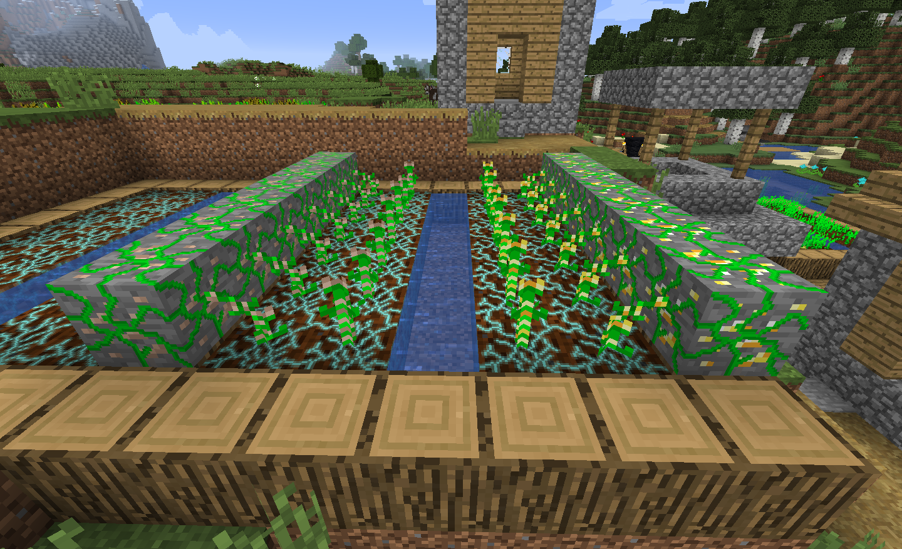
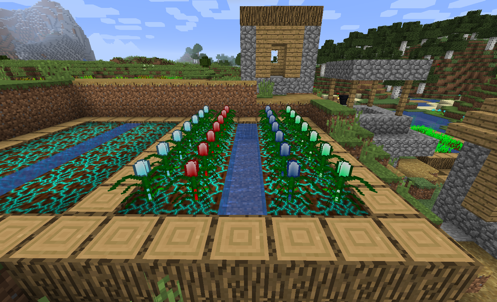
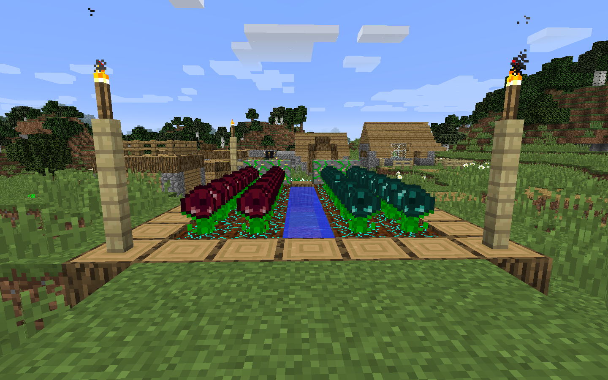

Getting Started
First things first, you'll want to dig to the bottom of the world
and find yourself some (or rather, a lot) of Mineral Stone. It
drops Mineral Rocks which are needed for most Resynth blocks and
items. You'll need an abundance to grow all the resource you want,
so you'll want to mine a lot. It can be grown so don't worry too much.
Next, you'll want to craft a Mineral Hoe. It's needed to till dirt
into the farmland block Resynth plants need. It also provides
some useful features such as checking plant growth.
You'll start getting seeds just by mining ores and killing
mobs, so once you have the basics, you should be ready to plant!
For a more detailed getting started guide, check out the
Official Getting Started Guide
in the Wiki.
No More Grinding
Resynth doesn't make you grind for the final resource by combining
hundred of the same plant item in a crafting table. All plant
produce can be smelted in a furnace to get the final resource:
Diamond Shards, which are obtained from Diamond Plants, can be
be smelted to get Diamonds and Ender Pearl Bulbs from the Ender
Plant can be smelted to get Ender Pearls.
Getting Seeds
Since the methods of obtaining Resynth Seeds is rather uncommon
and varies between plant type, it can be difficult to know just
how to get the seeds. This is why all Seeds and Produce items
come a with a tooltip explaining how to get the seeds and a dedicated
Wiki page on
Obtaining Seeds and Resources
has been created.
For more
detailed information about the mod and how to use it
View The Wiki
For some
common issues and
questions about the mod
View The FAQ
Growing Ores
Gold and Iron - Metallic Plant Types

Growing Resources
Diamond, Redstone, Lapis Lazuli and Emerald - Crystalline Plant Types

Growing Mob Drops
Ender Pearl and Spiders Eye - Biochemical Plant Types
